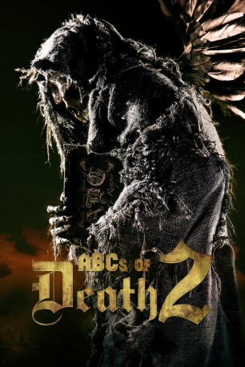
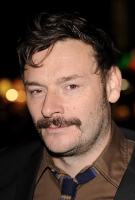

#6048 ABCs of Death 2
Alternativ: 23 Ways to Die (Originaltitel)
 gesehen am 03.05.2017
gesehen am 03.05.2017
 
 IMDB-Wertung: 5.5 / 10
IMDB-Wertung: 5.5 / 10  Tomatometer: 73
Tomatometer: 73  Metascore: 0
Metascore: 0 
Und wieder bekamen weltweit einschlägige Genrefilmer aus aller Herren Länder einen Buchstaben aus dem Alphabet zugeteilt. Daran anlehnend sollten sie eine Geschichte über den Tod abliefern. Herausgekommen sind provokante, schockierende, witzige und manchmal auch anstößige Kurzfilme, die eine neue Generation des modernen Genrefilms zelebrieren.
Jahr: 2014
Dauer: 122 Minuten
FSK: 18
Land: USA Studio: Magnet ReleasingTonspuren:
Untertitel: Deutsch,
Auflösung: 720p (1280x720) Größe: 3880 MB
Genre: Horror, Komödie
Regisseur: Rodney Ascher, Julian Barratt, Robert Boocheck, Alejandro Brugués, Kristina Buozyte, Alexandre Bustillo,  Larry Fessenden, Julian Gilbey, Jim Hosking, Lancelot Oduwa Imasuen, E.L. Katz, Aharon Keshales, Steven Kostanski, Marvin Kren, Juan Martínez Moreno, Erik Matti, Wolfgang Matzl, Julien Maury, Robert Morgan, Chris Nash, Vincenzo Natali, Hajime Ohata, Navot Papushado, Bill Plympton, Dennison Ramalho, Todd Rohal, Jerome Sable, Bruno Samper, Jen Soska, Sylvia Soska, Sôichi Umezawa
Larry Fessenden, Julian Gilbey, Jim Hosking, Lancelot Oduwa Imasuen, E.L. Katz, Aharon Keshales, Steven Kostanski, Marvin Kren, Juan Martínez Moreno, Erik Matti, Wolfgang Matzl, Julien Maury, Robert Morgan, Chris Nash, Vincenzo Natali, Hajime Ohata, Navot Papushado, Bill Plympton, Dennison Ramalho, Todd Rohal, Jerome Sable, Bruno Samper, Jen Soska, Sylvia Soska, Sôichi Umezawa
Drehbuch: Mark McCorkle
Soundtrack:
Darsteller:
- Eric Jacobus als Assassin, segment A
 Andy Nyman als Coke Dealer, segment A
Andy Nyman als Coke Dealer, segment A Simon Barrett als Assassin's Employer, segment A
Simon Barrett als Assassin's Employer, segment A- Xin Sarith Wuku als Maintenance Worker, segment A
- Ben Maccabee als Arnold the Muscle, segment A
- Jason Cabell als Big Guy the Muscle, segment A
- Josh Ethier als Jack the Muscle, segment A
-  Julian Barratt als Peter Toland, segment B
- Matthew Steer als Sound Man, segment B
 Ian Virgo als Fletcher, segment C
Ian Virgo als Fletcher, segment C- Ryan Winsley als Tobias, segment C
- Tom Bonington als Father Chester, segment C
- Miguel Ángel Muñoz als Man, segment E
- Martina García als Woman, segment E
- Tawfeek Barhom als Arab Boy, segment F
 Nicholas Amer als Granddad, segment G
Nicholas Amer als Granddad, segment G- Jun Urbano als Caloy, segment I
- Tommy Abuel als Quinito, segment I
- Yayo Aguila als Carmela, segment I
- Francisco Barreiro als (segment J
- Julija Steponaityte als The Girl, segment K
- Patrick Daniel als Himself, segment M
- Joe O'Dell als Flip, segment M
- Kestrin Pantera als Terrorized Woman, segment M
- Anthony Nuccio als Cop, segment M
- Robert Boocheck als The Pusher, segment M
- Lauren Molina als Bride, segment N
- Lexington Kennedy als Skeleton, segment N
- Aurelio Voltaire als Pirate, segment N
- Jack Fessenden als Home Invader, segment N
- Takahiro Ono als Public Prosecutor, segment O
- Tim Kirk als Orderly, segment Q
 André Hennicke als Klaus, segment R
André Hennicke als Klaus, segment R- Victoria Broom als Miriam, segment S
 Alan McKenna als Bob, segment S
Alan McKenna als Bob, segment S- Gary Reimer als Husband, segment S
- Tristan Risk als Yumi, segment T
- Conor Sweeney als Gonzo, segment T
 C. Ernst Harth als Porn Guy #1, segment T
C. Ernst Harth als Porn Guy #1, segment T- Lee Majdoub als Office Temp, segment T
- Laurence R. Harvey als Wanker, segment T
- James McDougall als Subnorm, segment U
- Angelica Alejandro als Utopian, segment U
- Jessica Allen als Utopian, segment U
- Sean Band als Utopian, segment U
- Sarah Beaudin als Utopian, segment U
- Heather Byrne als Utopian, segment U
- Alys Crocker als Utopian, segment U
- John Fray als Utopian, segment U
- Jesse Daniel Glass als Utopian, segment U
Datei: X:\FSK18-Collections\ABCs of Death\ABCs of Death 2 (2014, FSK18, 1280x720).mkv seit 25.04.2017
Festplatte: FSK18
 Alle Filme aus Gruppe 'FSK18-Collections\ABCs of Death'
Alle Filme aus Gruppe 'FSK18-Collections\ABCs of Death'